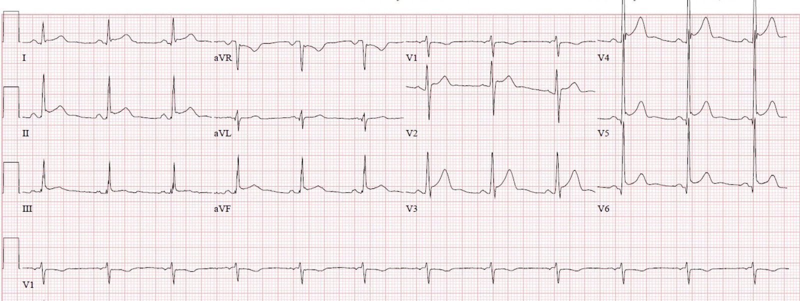
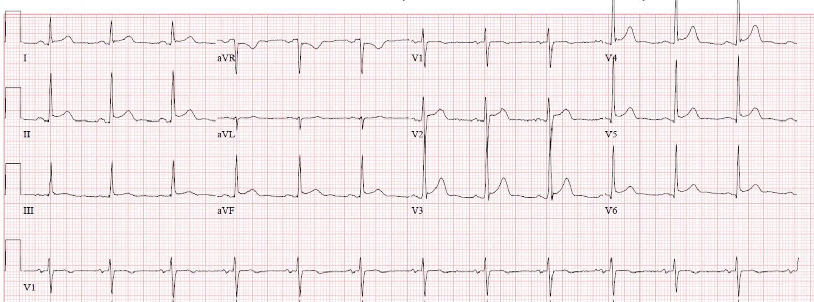
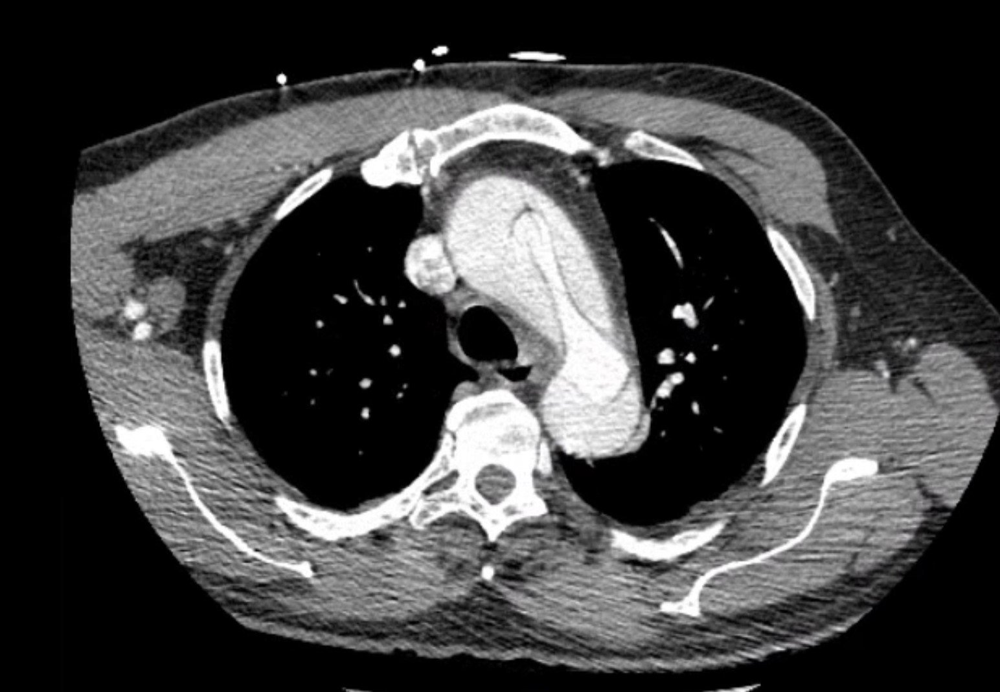
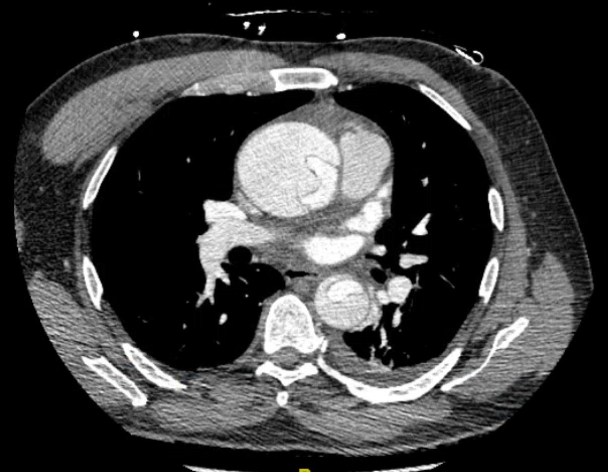
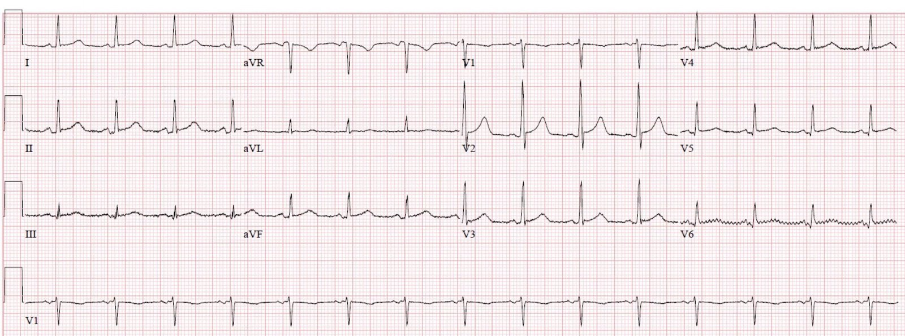
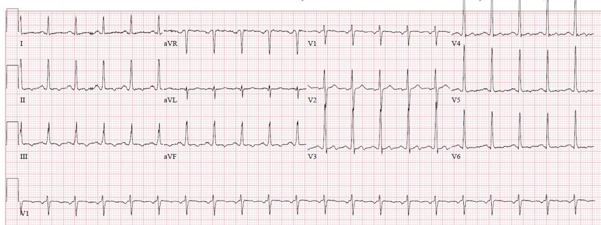
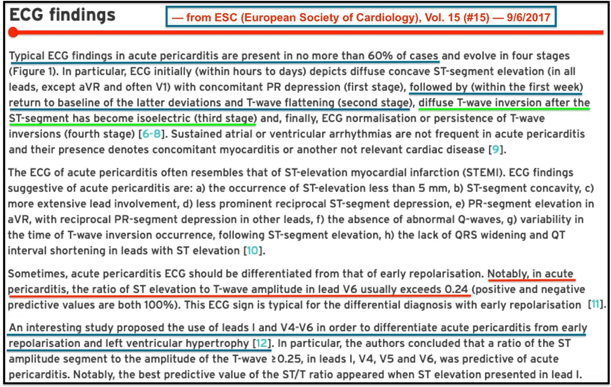
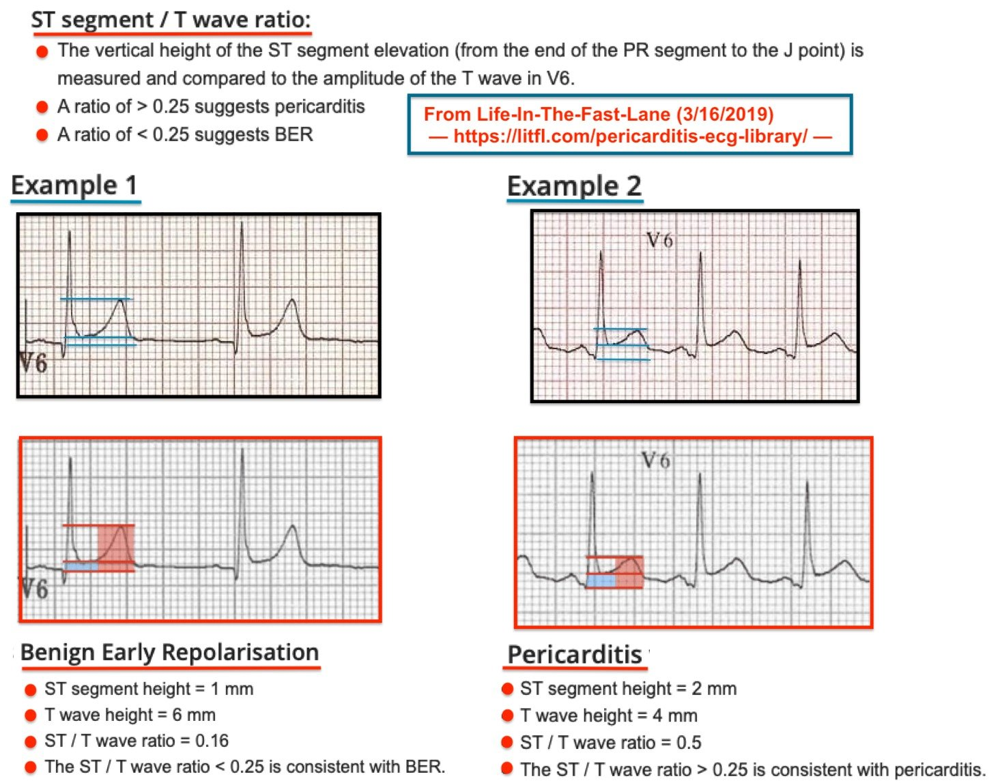
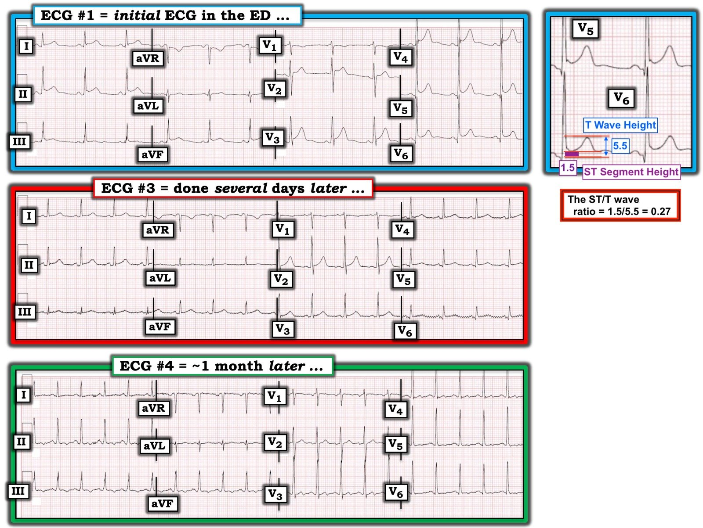

13/12/2019 — “Viêm màng ngoài tim” lại ra đòn
Bản dịch tiếng Việt của bài "“Pericarditis” strikes again" – Dr. Smith’s ECG Blog. Giữ nguyên toàn bộ 11 hình ảnh của bản gốc.
Tác giả: Pendell Meyers
Một người đàn ông cuối độ tuổi 40, có nhiều yếu tố nguy cơ hội chứng vành cấp (ACS), đến khám với lý do chính là đau ngực. Vài giờ trước khi đến viện, trong lúc đang lái xe tải, ông bắt đầu bị đau ngực giữa mới xuất hiện, không lan, không có yếu tố làm nặng/làm giảm, cũng không có triệu chứng kèm theo nào khác. Khi hỏi các hệ cơ quan, bệnh nhân cho biết bị đau lưng khoảng 1 tuần nay, đã tự dùng NSAID nhưng chỉ đỡ rất ít. Khám thấy bệnh nhân trông không có vẻ bệnh nặng, dấu hiệu sinh tồn bình thường ngoại trừ huyết áp 155/82, không có tiếng thổi hay tiếng cọ, mạch bình thường, đau ngực không tái hiện được khi ấn.
Đây là điện tâm đồ lúc phân loại (triage) của ông:


Nhịp xoang
Hình thái QRS bình thường
ST chênh lên (STE) lan tỏa, gồm các chuyển đạo V2-V6, I, II, III, aVF (kèm ST chênh xuống (STD) soi gương tất yếu ở aVR)
Có lẽ có một chút đoạn PR chênh xuống rất nhỏ (đến 0.8 mm đã được mô tả ở người bình thường)
Nhận định chung: Theo quan điểm và kinh nghiệm của tôi, điện tâm đồ này nhiều khả năng nhất là một điện tâm đồ nền bình thường, nhưng có một khả năng nhỏ là viêm màng ngoài tim. Tôi không cho rằng ở đây có dấu hiệu nào gợi ý OMI.
Tôi đã nhắn tin điện tâm đồ này cho Dr. Smith mà không kèm thông tin gì, và đây là câu trả lời của ông:
“Có thể là viêm màng ngoài tim nhưng nhiều khả năng là biến thể bình thường.”
Các bác sĩ điều trị lo ngại về ST chênh lên nên đã gọi khoa tim mạch hội chẩn để can thiệp mạch vành qua da (PCI) cấp cứu. Các bác sĩ tim mạch cho rằng điện tâm đồ không thể hiện hội chứng vành cấp, và nghĩ nhiều khả năng là viêm màng ngoài tim hơn, nên đã không đưa ông vào phòng thông tim (cath lab).
Sau đó troponin T đầu tiên của ông trả về tăng, 0.19 ng/mL.
Một điện tâm đồ ghi lại được thực hiện và khoa tim mạch được mời hội chẩn lại:


Do troponin tăng và đau vẫn tiếp diễn, lúc này khoa tim mạch quyết định đưa ông vào phòng thông tim.
Họ thấy bệnh động mạch vành không tắc nghẽn, chỉ hẹp 20% nhánh bờ tù thứ hai (OM2) và hẹp 10% RCA. Không có thủ phạm cấp tính.
Ông được nhập khoa tim mạch.
Đây là trích đoạn từ ghi chép nhập viện ban đầu của khoa tim mạch (sau khi thông tim không thấy thủ phạm cấp tính):
“…đau ngực, không lan, có tính chất kiểu màng phổi, giảm khi ngồi cúi ra trước”
“Kế hoạch: nhiều khả năng viêm cơ tim”
Colchicine được chỉ định và bệnh nhân dùng liều đầu tiên vào buổi chiều.
Troponin giảm dần từ mức 0.19 ng/mL.
Sáng hôm sau bệnh nhân đi siêu âm tim thường quy, người làm siêu âm nhận thấy gốc động mạch chủ giãn tới 5.47 cm kèm hở van động mạch chủ nặng. Nhóm điều trị được báo và đã chỉ định chụp động mạch chủ khẩn, kết quả cho thấy bóc tách động mạch chủ type A kéo dài từ van động mạch chủ đến các động mạch chậu.




Động mạch chủ được phẫu thuật sửa chữa cấp cứu, bệnh nhân có diễn biến phức tạp tại ICU (bao gồm thuyên tắc phổi hình yên ngựa và sau đó là xuất huyết tiêu hóa!) nhưng đã sống sót với chức năng rất tốt.
Không có gì ngạc nhiên, bệnh sử (HPI) của khoa tim mạch lại thay đổi thêm lần nữa trong ghi chép kế tiếp sau khi chẩn đoán bóc tách động mạch chủ:
“…đau ngực khởi phát đột ngột khi đang cố đỗ xe tải, mô tả là đau âm ỉ lan ra sau lưng, không có yếu tố làm nặng hay làm giảm…”
Đây là điện tâm đồ của ông vài ngày sau khi được chẩn đoán:


Viêm màng ngoài tim sẽ có diễn tiến điển hình riêng của nó, nhồi máu cơ tim cấp cũng vậy.
Một tháng sau bệnh nhân quay lại vì một vấn đề không liên quan:


Những điểm cần học:
Tôi thấy dường như chính ý nghĩ “viêm màng ngoài tim” đã làm chậm trễ hoặc suýt nữa ngăn cản hoàn toàn việc chẩn đoán bóc tách động mạch chủ ở người đàn ông trẻ này. Như chúng tôi đã nhiều lần mô tả trên blog này, chẩn đoán “viêm màng ngoài tim” dương tính giả gây tử vong vì làm người thầy thuốc phân tâm khỏi những cấp cứu thực sự, bao gồm OMI, bóc tách động mạch chủ, thuyên tắc phổi (PE) và các bệnh khác.
Phần lớn các trường hợp đau ngực kèm ST chênh lên lan tỏa là do ST chênh lên biến thể bình thường, KHÔNG phải do viêm màng ngoài tim.
Bạn chẩn đoán viêm màng ngoài tim thì bạn tự chuốc lấy rủi ro! Nhồi máu cơ tim cấp thường bị chẩn đoán nhầm là viêm màng ngoài tim. Bệnh nhân thuyên tắc phổi hoặc bóc tách động mạch chủ mà có ST chênh lên biến thể bình thường có nguy cơ cao bị chẩn đoán là viêm màng ngoài tim trong khi bệnh thật sự của họ nghiêm trọng hơn nhiều!! Viêm màng ngoài tim là một chẩn đoán LOẠI TRỪ.
Trên điện tâm đồ của viêm màng ngoài tim:
–Phải có đoạn PR chênh xuống rõ rệt
–Phải có ST chênh lên dạng dẹt với tỷ lệ sóng T so với đoạn ST thấp.
–Không được có ST chênh xuống soi gương ở bất kỳ đâu ngoại trừ aVR.
–Và phải có bằng chứng xác nhận, cùng bằng chứng đã LOẠI TRỪ các bệnh lý nghiêm trọng khác.
Xem ca này, cũng do Pendell Meyers viết khi anh còn là sinh viên y khoa:
31 Year Old Male with RUQ Pain and a History of Pericarditis. Submitted by a Med Student, with Great Commentary on Bias! (Nam 31 tuổi đau hạ sườn phải và có tiền sử viêm màng ngoài tim. Do một sinh viên y khoa gửi, kèm bình luận tuyệt vời về thiên kiến!) (biến thể bình thường bị chẩn đoán nhầm là viêm màng ngoài tim)
Các ca khác:
Palpitations and Chest Tightness: Should You Activate the Cath Lab (or Give Thrombolytics)? (Hồi hộp đánh trống ngực và tức ngực: Có nên kích hoạt phòng thông tim (hoặc cho tiêu sợi huyết)?) (biến thể bình thường, không phải viêm màng ngoài tim)
A Young Man with Sharp Chest pain (Một người đàn ông trẻ đau ngực kiểu dao đâm) (biến thể bình thường, không phải viêm màng ngoài tim)
24 yo woman with chest pain: Is this STEMI? Pericarditis? Beware a negative Bedside ultrasound. (Phụ nữ 24 tuổi đau ngực: Đây là STEMI? Viêm màng ngoài tim? Hãy cảnh giác với siêu âm tại giường âm tính.) (nhồi máu cơ tim cấp, không phải viêm màng ngoài tim)
You Diagnose Pericarditis at your Peril (at the Patient’s Peril!) (Bạn chẩn đoán viêm màng ngoài tim thì bạn tự chuốc lấy rủi ro (rủi ro cho bệnh nhân!)) – Nhồi máu cơ tim cấp bị chẩn đoán nhầm là viêm màng ngoài tim.

===================================
BÌNH LUẬN CỦA TÔI, bởi KEN GRAUER, MD (13/12/2019):
===================================
Tôi RẤT THÍCH bài này — vì nó khai thác quá trình ra quyết định quan trọng gắn với việc chẩn đoán Viêm màng ngoài tim cấp tại khoa cấp cứu (ED). Tôi hoàn toàn đồng ý với nhiều phát hiện MẤU CHỐT mà Dr. Meyers đã truyền tải.
- Dù vậy — tôi đưa ra một góc nhìn khác về một số khía cạnh của ca này.
Trước khi bàn về suy nghĩ của tôi trong việc đọc điện tâm đồ ở ca này — có lẽ sẽ hữu ích nếu ôn lại một số tiêu chuẩn điện tâm đồ của viêm màng ngoài tim cấp. Tôi đã trích trong Hình 1 các đoạn liên quan từ một bài viết năm 2017 của ESC (Hiệp hội Tim mạch châu Âu) về chủ đề này của Xanthopoulos & Skoularigis (ESC: Vol. 15, No.15-9/6/2017).


Trong số các điểm MẤU CHỐT về chẩn đoán viêm màng ngoài tim cấp trên điện tâm đồ từ Hình 1 (tôi đã bổ sung thêm một số điểm của riêng mình) — có những điểm sau:
- Các dấu hiệu điện tâm đồ điển hình của viêm màng ngoài tim cấp không phải lúc nào cũng có! Điện tâm đồ còn lâu mới là một công cụ chẩn đoán hoàn hảo.
- Có 4 GIAI ĐOẠN được mô tả trong diễn tiến điện tâm đồ của viêm màng ngoài tim cấp. Có thể tóm tắt như sau: i) Giai đoạn I — có ST chênh lên toàn thể ở hầu hết các chuyển đạo (có lẽ trừ các chuyển đạo “phía phải” = chuyển đạo III, aVR và V1); ii) Giai đoạn II — ST chênh lên toàn thể này trở về đường nền (tức là pha “giả bình thường hóa”); iii) Giai đoạn III — có sóng T đảo ngược lan tỏa; và, iv) Giai đoạn IV — toàn bộ bản ghi trở về bình thường.
- Trong 4 giai đoạn này — chỉ Giai đoạn I là dễ nhận ra là có thể do viêm màng ngoài tim cấp. Bạn sẽ không bao giờ đoán là “viêm màng ngoài tim” nếu chỉ được đưa một bản ghi đơn lẻ ở Giai đoạn II, III hay IV.
- Diễn tiến theo thời gian của 4 giai đoạn điện tâm đồ này (ở những ca viêm màng ngoài tim có xuất hiện các giai đoạn này) — rất thay đổi. Bản tóm tắt của ESC trong Hình 1 nêu rằng Giai đoạn I có thể kéo dài “từ vài giờ đến vài ngày” — trước khi chuyển sang Giai đoạn II.
- Hình dạng của ST chênh lên điển hình là dạng lõm (concave-up) (tức là hình “mặt cười”).
- Các dấu hiệu điện tâm đồ thường gắn với nhồi máu cơ tim cấp (tức là sóng Q lớn hoặc rộng bất thường — ST chênh xuống soi gương) đều vắng mặt!
- ĐIỂM THEN CHỐT (PEARL) #1 — Trong viêm màng ngoài tim cấp, hình dạng ST-T ở chuyển đạo II có xu hướng giống với ở chuyển đạo I. Ngược lại, trong nhồi máu cơ tim cấp — hình dạng ST-T ở chuyển đạo II giống với chuyển đạo III (và không giống chuyển đạo I).
- Có thể có đoạn PR chênh xuống ở nhiều chuyển đạo — kèm PR chênh lên “soi gương” ở chuyển đạo aVR.
- TỶ LỆ giữa mức ST chênh lên so với biên độ sóng T ở chuyển đạo V6 phải nhỏ hơn 0.25 (tức là chiều cao của ST chênh lên, đo từ cuối đoạn PR đến điểm J — phải nhỏ hơn 1/4 chiều cao sóng T ở chuyển đạo V6).
- LƯU Ý CỦA TÁC GIẢ: Trong những năm gần đây, tiêu chuẩn Tỷ lệ này được chú ý nhiều. Tôi không phải là người ủng hộ tiêu chuẩn này — vì tôi cảm thấy ( = ý kiến của tôi) rằng thường khó đạt được sự thống nhất trong cách đo giữa các bác sĩ lâm sàng. Chỉ cần một sai số rất nhỏ trong cách đo mức ST chênh lên — cũng đủ làm lệch phép tính xem chiều cao đoạn ST này lớn hơn hay nhỏ hơn 25% chiều cao sóng T ở chuyển đạo đó. Dù vậy — tôi minh họa CÁCH tính TỶ LỆ này trong Hình 2, phỏng theo bài đăng ngày 16/3/2019 trên Life-In-The-Fast-Lane.


Hình 2: Minh họa cách tính tỷ lệ đoạn ST so với sóng T — phỏng theo Life-In-The-Fast-Lane (Xem bài).
ĐIỂM THEN CHỐT (PEARL) #2:
- Những lời này của Dr. Meyers và Dr. Smith nên luôn đặt hàng đầu trong tâm trí của mọi người làm cấp cứu: “Bạn chẩn đoán viêm màng ngoài tim cấp thì BẠN tự chuốc lấy rủi ro!” Lý do rất rõ ràng — Về mặt thống kê (nếu tính tất cả bệnh nhân đến khoa cấp cứu) — hội chứng vành cấp là nguyên nhân gây đau ngực mới khởi phát kèm ST chênh lên trên điện tâm đồ phổ biến hơn nhiều so với viêm màng ngoài tim cấp.
- Dù vậy — ưu thế về tỷ lệ mắc nghiêng về hội chứng vành cấp này sẽ giảm đáng kể NẾU— bệnh nhân đang xét là một người trưởng thành trẻ tuổi có tiền triệu do virus (tức là sốt, đau cơ, đau ngực kiểu màng phổi) — vì nguyên nhân do virus là căn nguyên thường gặp nhất của viêm màng ngoài tim cấp.
- Ngược lại, NẾU — bệnh nhân đau ngực mới xuất hiện lớn tuổi hơn và không có các triệu chứng virus thuận lợi trước đó — thì viêm màng ngoài tim cấp trở thành một chẩn đoán hiếm gặp trong bối cảnh khoa cấp cứu.
Về các điện tâm đồ trong ca NÀY: Để cho rõ — tôi đặt 3 trong 4 điện tâm đồ của ca này cạnh nhau trong Hình 3:


Nhận định của tôi về điện tâm đồ #1: Như Dr. Meyers đã nêu — có ST chênh lên lan tỏa ở điện tâm đồ #1. Đoạn PR chênh xuống không quá mức tối thiểu. Góc nhìn khác của tôi về điện tâm đồ #1: Nói như trên — NẾU bệnh sử là bệnh nhân này là một người trưởng thành trẻ tuổi mới bị một bệnh virus cấp, nay đến khám vì đau ngực kiểu màng phổi và thay đổi theo tư thế (nặng lên khi nằm ngửa, và giảm khi ngồi cúi ra trước) — thì tôi sẽ đọc điện tâm đồ #1 là rõ ràng phù hợp với viêm màng ngoài tim cấp. Lập luận của tôi như sau:
- Điện tâm đồ #1 — cho thấy ST chênh lên dạng lõm hướng lên nhiều hơn chỉ một chút ở nhiều chuyển đạo (tức là các chuyển đạo I, II, III; aVF; và từ V2 đến V6). Tôi cho rằng độ lan tỏa và mức ST chênh lên ở điện tâm đồ #1 rõ ràng là nhiều hơn mức tôi thường thấy ở các biến thể tái cực. Điều này không có nghĩa là điện tâm đồ #1 không thể phản ánh một biến thể tái cực — mà chỉ có nghĩa là NẾU bệnh sử và khám lâm sàng phù hợp với những gì người ta có thể chờ đợi ở viêm màng ngoài tim cấp — thì điện tâm đồ #1 rõ ràng phù hợp với chẩn đoán này ( = ý kiến của tôi).
- Mặc dù với mức ST chênh lên toàn thể như vậy, tôi sẽ chờ đợi thấy đoạn PR chênh xuống nhiều hơn so với những gì thấy ở điện tâm đồ #1 — nhưng việc thiếu PR chênh xuống (theo ý kiến của tôi) không loại trừ khả năng viêm màng ngoài tim cấp. Theo kinh nghiệm của tôi — ST chênh lên toàn thể là một dấu hiệu điện tâm đồ quan trọng hơn nhiều so với PR chênh xuống (Xem Bình luận của tôi ở cuối bài đăng ngày 10 tháng Mười Hai năm 2019 trên Dr. Smith’s ECG Blog).
- Hình dạng ST-T của chuyển đạo II ở điện tâm đồ #1 giống với hình dạng ST-T ở chuyển đạo I hơn nhiều so với ở chuyển đạo III (Xem Điểm then chốt #1 ở trên).
- Không có ST chênh xuống soi gương ở điện tâm đồ #1 (ngoài ST chênh xuống dự kiến ở chuyển đạo aVR). Các sóng q hiện diện đều nhỏ và hẹp, phù hợp với sóng q “vách” bình thường.
- TỶ LỆ đoạn ST so với biên độ sóng T ở điện tâm đồ #1 thực ra lại phù hợp (theo cách đo của tôi) với chẩn đoán viêm màng ngoài tim cấp trên điện tâm đồ (như trong hình chèn bên phải điện tâm đồ #1 — tỷ lệ này >0.27, và do đó là dương tính!).
- ĐIỂM THEN CHỐT (PEARL) #3: Theo kinh nghiệm xem xét đúng nghĩa là hàng trăm ca trên internet có nghi ngờ chẩn đoán viêm màng ngoài tim cấp — tuyệt đại đa số bác sĩ lâm sàng KHÔNG HỀ đề cập rằng họ đã nghe tìm tiếng cọ màng ngoài tim. Nếu không được đề cập như một dấu hiệu dương tính hay âm tính — điều này thường có nghĩa là bác sĩ đã không nghe tìm tiếng cọ. Không nghe tìm tiếng cọ là một thiếu sót nghiêm trọng — bởi vì NẾU bạn nghe thấy tiếng cọ màng ngoài tim — thì bạn đã xác lập được chẩn đoán viêm màng ngoài tim cấp! (Dr. Meyers đã nhấn mạnh rằng không nghe thấy tiếng cọ ở ca này). ĐIỀU CỐT LÕI — ĐỪNG QUÊN nghe kỹ tìm TIẾNG CỌ mỗi khi cân nhắc viêm màng ngoài tim cấp như một khả năng chẩn đoán!
LƯU Ý: Trong ca cụ thể này — đã có sai sót trong việc đánh giá bệnh sử. Như Dr. Meyers đã nêu — việc tập trung không phù hợp vào chẩn đoán viêm màng ngoài tim dường như đã làm chậm trễ (và suýt nữa ngăn cản) chẩn đoán đúng là bóc tách động mạch chủ cấp.
- Như Dr. Meyers đã nêu — Viêm màng ngoài tim cấp phải là một chẩn đoán loại trừ!
- Dù vậy — viêm màng ngoài tim cấp vẫn thỉnh thoảng xảy ra … vì vậy điều quan trọng là phải nắm vững các dấu hiệu điện tâm đồ của chẩn đoán này
Do đó, dù biết rằng bệnh nhân trong ca này không bị viêm màng ngoài tim cấp — tôi muốn nêu bật một số điểm về điện tâm đồ thứ 3 và thứ 4 được ghi trong ca này.
CÂU HỎI #1: Hãy tưởng tượng bệnh nhân có điện tâm đồ #1 thực sự bị viêm màng ngoài tim cấp.
- Trong trường hợp đó — điện tâm đồ #3, được ghi vài ngày sau, có phù hợp với diễn tiến điện tâm đồ được chờ đợi ở viêm màng ngoài tim cấp thực sự không?
TRẢ LỜI: Rõ ràng là ST chênh lên ở điện tâm đồ #3 ít hơn so với điện tâm đồ #1 ở hầu như tất cả các chuyển đạo. Theo Hình 1 — điều này phù hợp với diễn tiến từ Giai đoạn I sang Giai đoạn II của viêm màng ngoài tim, vốn được chờ đợi sẽ thấy trên các điện tâm đồ liên tiếp trong vài giờ đến vài ngày sau đó.
- LƯU Ý — Tôi biết rằng bệnh nhân trong ca này không bị viêm màng ngoài tim cấp. Tôi chỉ đơn thuần đang MÀI GIŨA kỹ năng đọc điện tâm đồ của bạn bằng cách nêu bật rằng những gì thấy ở điện tâm đồ #3 có thể hoàn toàn phù hợp với diễn tiến điện tâm đồ đang tiếp diễn ở một bệnh nhân thực sự bị viêm màng ngoài tim.
CÂU HỎI #2: Điện tâm đồ #4 được ghi ở bệnh nhân trong ca này khoảng 1 tháng sau, khi ông quay lại khoa cấp cứu vì một vấn đề không liên quan. Liệu điện tâm đồ #4 có giúp chúng ta hiểu thêm không? (GỢI Ý: Hãy xem điện tâm đồ #4 là bản ghi theo dõi tiếp nối các điện tâm đồ #1 và #3).
TRẢ LỜI: Đáng tiếc là điện tâm đồ #4 không giúp chúng ta hiểu thêm về ca này. So với điện tâm đồ #3 — ST-T dẹt thêm, và bắt đầu có sóng T đảo ngược ở một số chuyển đạo, không khác mấy so với những gì có thể thấy khi bệnh tiến triển sang Giai đoạn III của viêm màng ngoài tim. Dù vậy — tần số tim nhanh hơn đáng kể so với ở 2 bản ghi trước (các điện tâm đồ #1 và #3) — nên thực sự không có cách nào phân biệt đâu là thay đổi ST-T do nhịp nhanh so với do diễn tiến của bệnh nền của bệnh nhân.
Chúng tôi xin CẢM ƠN Dr. Meyers đã trình bày ca bệnh giàu thông tin này!